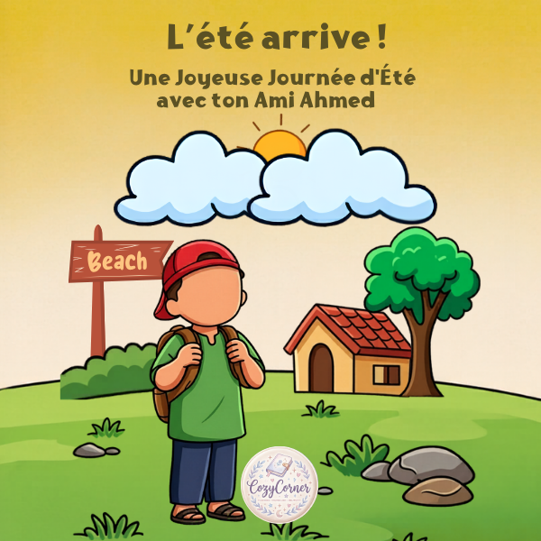

See the Cozy Details


A cozy, minimalist activity book following Ahmed's summer adventure. Each page is carefully designed to help little ones develop positive daily habits, kindness, and faith through creative, screen-free play.
✓ 18 unique coloring pages
✓ Cozy, minimalist designs for easy coloring
✓ Focused on positive daily habits and faith
✓ Digital & printable (PDF) format
